| Name | Description |
|---|---|
| TestMixer | |
| TestMixerSlowFast | |
| TestPressDrop | |
| TestThroughW | Test of the ThroughW component |
| TwoTanks | Test case for Tank and Flow1D |
| TestJoin | Test case FlowJoin and FlowSplit |
| TestJoinRev | Test case FlowJoin |
| TestSplitRev | Test case FlowSplit |
| TestValves | Test cases for valves |
| TestValveChoked | Test case for valves in choked flow |
| TestCoeffValve | Test case for valve with the several coefficients |
| ValveZeroFlow | Test case for valves with zero flowrate |
| ValveZeroFlow2 | Test case for valves with zero flowrate |
| WaterPump | Test case for WaterPump |
| WaterPumps | Test case for WaterPump |
| WaterPumpMech | Test case for WaterPumpMech |
| SimpleMotor | A simple model of an electrical dc motor (based on DriveLib model). |
| TestAccumulator | Simple test for Water-Gas Accumulator component |
| TestST1 | |
| TestST2 |
This model tests the Mixer and Header models.
model TestMixer
package Medium=Modelica.Media.Water.StandardWater;
Water.SourceW SourceW1(w0=0.5, h=2.8e6);
Water.SourceW SourceW2(w0=0.5, h=3.0e6);
Water.SinkP SinkP1(p0=0);
Water.Mixer mixer(
V=1,
Cm=0,
hstart=2.9e6,
redeclare package Medium = Medium,
initOpt=ThermoPower.Choices.Init.Options.steadyState);
Water.ValveLin ValveLin1(Kv=1/1e5);
Modelica.Blocks.Sources.Step Step1(
height=-.2,
offset=1,
startTime=2);
Water.PressDrop pressDrop(
wnom=1,
dpnom=100,
rhonom=1000,
redeclare package Medium = Medium,
FFtype=ThermoPower.Choices.PressDrop.FFtypes.OpPoint);
Water.SourceW SourceW3(w0=0.5, h=2.8e6);
Water.Header header(
V=1,
redeclare package Medium = Medium,
initOpt=ThermoPower.Choices.Init.Options.steadyState);
Water.ValveLin ValveLin2(Kv=1/1e5);
Water.SinkP SinkP2(p0=0);
equation
connect(SourceW1.flange, mixer.in1);
connect(SourceW2.flange, mixer.in2);
connect(ValveLin1.outlet, SinkP1.flange);
connect(pressDrop.outlet, ValveLin1.inlet);
connect(mixer.out, pressDrop.inlet);
connect(SourceW3.flange, header.inlet);
connect(header.outlet, ValveLin2.inlet);
connect(ValveLin2.outlet, SinkP2.flange);
connect(Step1.y, ValveLin1.cmd);
connect(Step1.y, ValveLin2.cmd);
end TestMixer;
This model tests the Mixer and Header models with different medium models. If an incompressible medium model is used, the fast pressure dynamics is neglected, thus allowing simulation with explicit algorithms and large time steps.
model TestMixerSlowFast
// package Medium=Modelica.Media.Water.StandardWater;
package Medium=Media.LiquidWaterConstant;
Water.SourceW SourceW1(w0=0.5, h=1e5,
redeclare package Medium = Medium);
Water.SourceW SourceW2(w0=0.5, h=2e5,
redeclare package Medium = Medium);
Water.SinkP SinkP1(p0=1e5, redeclare package Medium = Medium);
Water.Mixer Mixer1(
hstart=1e5,
V=0.01,
redeclare package Medium = Medium,
initOpt=ThermoPower.Choices.Init.Options.steadyState);
Water.ValveLin ValveLin1(Kv=1/1e5, redeclare package Medium = Medium);
Modelica.Blocks.Sources.Step StepValv(
height=-.2,
offset=1,
startTime=2);
Water.PressDrop PressDrop1(
wnom=1,
dpnom=100,
rhonom=1000,
redeclare package Medium = Medium,
FFtype=ThermoPower.Choices.PressDrop.FFtypes.OpPoint);
Water.Header Header1(
hstart=1e5,
V=0.01,
redeclare package Medium = Medium,
initOpt=ThermoPower.Choices.Init.Options.steadyState);
Modelica.Blocks.Sources.Step StepEnthalpy(
height=1e5,
offset=1e5,
startTime=4);
equation
connect(SourceW1.flange, Mixer1.in1);
connect(SourceW2.flange, Mixer1.in2);
connect(ValveLin1.outlet, SinkP1.flange);
connect(Mixer1.out, PressDrop1.inlet);
connect(PressDrop1.outlet, Header1.inlet);
connect(Header1.outlet, ValveLin1.inlet);
connect(StepEnthalpy.y, SourceW1.in_h);
connect(StepValv.y, ValveLin1.cmd);
end TestMixerSlowFast;
| Type | Name | Default | Description |
|---|---|---|---|
| Real | Kf_unknown |
model TestPressDrop
package Medium=Modelica.Media.Water.StandardWater;
Water.SourceP SourceP1(p0=3e5);
Water.SinkP SinkP1(p0=1e5);
parameter Real Kf_unknown(fixed=false);
Water.SourceP SourceP3(p0=3e5);
Water.SinkP SinkP3(p0=1e5);
Water.PressDrop PressDrop3a(
redeclare package Medium = Medium,
wnom=1,
dpnom=1e5,
rhonom=1000,
FFtype=ThermoPower.Choices.PressDrop.FFtypes.OpPoint);
Water.PressDrop PressDrop3b(
redeclare package Medium = Medium,
wnom=1,
dpnom=1e5,
rhonom=1000,
FFtype=ThermoPower.Choices.PressDrop.FFtypes.OpPoint);
Water.SourceP SourceP4(p0=3e5);
Water.SinkP SinkP4(p0=1e5);
Water.PressDrop PressDrop4a(
redeclare package Medium = Medium,
K=1,
A=1e-4,
wnom=1,
FFtype=ThermoPower.Choices.PressDrop.FFtypes.Kinetic);
Water.PressDrop PressDrop4b(
redeclare package Medium = Medium,
wnom=1,
K=1,
A=1e-4,
FFtype=ThermoPower.Choices.PressDrop.FFtypes.Kinetic);
Water.SourceP SourceP2(p0=3e5);
Water.SinkP SinkP2(p0=1e5);
Water.PressDrop PressDrop2a(
redeclare package Medium = Medium,
wnom=1,
Kf=Kf_unknown,
FFtype=ThermoPower.Choices.PressDrop.FFtypes.Kf);
Water.PressDrop PressDrop2b(
redeclare package Medium = Medium,
wnom=1,
Kf=Kf_unknown,
FFtype=ThermoPower.Choices.PressDrop.FFtypes.Kf);
Water.PressDrop PressDrop1a(
wnom=1,
Kf=1e8,
redeclare package Medium = Medium,
FFtype=ThermoPower.Choices.PressDrop.FFtypes.Kf);
Water.PressDrop PressDrop1b(redeclare package Medium = Medium,
wnom=1,
Kf=1e8,
FFtype=ThermoPower.Choices.PressDrop.FFtypes.Kf);
initial equation
PressDrop2a.inlet.w=1;
equation
connect(SourceP3.flange, PressDrop3a.inlet);
connect(PressDrop3a.outlet, PressDrop3b.inlet);
connect(PressDrop3b.outlet, SinkP3.flange);
connect(SourceP4.flange, PressDrop4a.inlet);
connect(PressDrop4a.outlet, PressDrop4b.inlet);
connect(PressDrop4b.outlet, SinkP4.flange);
connect(SourceP2.flange,PressDrop2a. inlet);
connect(PressDrop2a.outlet,PressDrop2b. inlet);
connect(PressDrop2b.outlet,SinkP2. flange);
connect(SourceP1.flange, PressDrop1a.inlet);
connect(PressDrop1a.outlet, PressDrop1b.inlet);
connect(PressDrop1b.outlet, SinkP1.flange);
end TestPressDrop;
model TestThroughW "Test of the ThroughW component"
Water.SourceP SourceP1;
Water.PressDropLin PressDropLin1(R=1e5/1);
Water.ThroughW ThroughW1(w0=2);
Water.SinkP SinkP1;
Water.SourceP SourceP2;
Water.PressDropLin PressDropLin2(R=1e5/1);
Water.ThroughW ThroughW2(w0=2);
Water.SinkP SinkP2;
Modelica.Blocks.Sources.Step Step1(
height=1,
offset=2,
startTime=0.5);
equation
connect(ThroughW1.outlet, PressDropLin1.inlet);
connect(SourceP1.flange, ThroughW1.inlet);
connect(PressDropLin1.outlet, SinkP1.flange);
connect(ThroughW2.outlet, PressDropLin2.inlet);
connect(SourceP2.flange, ThroughW2.inlet);
connect(PressDropLin2.outlet, SinkP2.flange);
connect(Step1.y, ThroughW2.in_w0);
end TestThroughW;

This model tests the Tank model and the Flow1D model in reversing flow conditions.
Simulate the model for 20 s: flow oscillations arise from the combination of inertial effects in the pipe and from the hydraulic capacitance of the tanks. The temperature within the pipe evolves accordingly.
model TwoTanks "Test case for Tank and Flow1D"
ThermoPower.Water.Tank Tank2(
A=0.1,
pext=1e5,
redeclare package Medium = Modelica.Media.Water.WaterIF97OnePhase_ph);
Water.Flow1Dfem Pipe(
N=5,
L=1,
omega=0.314,
Dhyd=0.1,
A=0.01,
rhonom=1000,
wnom=40,
dpnom=20,
wnf=0.01,
Cfnom=0.005,
DynamicMomentum=true,
redeclare package Medium = Modelica.Media.Water.WaterIF97OnePhase_ph,
FFtype=ThermoPower.Choices.Flow1D.FFtypes.Cfnom,
alpha=1);
ThermoPower.Water.Tank Tank1(
A=0.1,
pext=1e5,
redeclare package Medium = Modelica.Media.Water.WaterIF97OnePhase_ph);
ThermoPower.Water.SourceW Plug1(w0=0);
ThermoPower.Water.SinkW Plug2(w0=0);
equation
connect(Pipe.outfl, Tank2.inlet);
connect(Tank1.outlet, Pipe.infl);
connect(Plug1.flange, Tank1.inlet);
connect(Tank2.outlet, Plug2.flange);
initial equation
Tank1.h = 2e5;
Tank1.y = 2;
Tank2.h = 1e5;
Tank2.y = 1;
end TwoTanks;
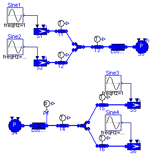
This model tests the FlowJoin and the FlowSplit models in all the possible flow configurations.
Simulate the model for 4 s and observe the temperatures measured by the different sensors as the flows change.
model TestJoin "Test case FlowJoin and FlowSplit"
package Medium=Modelica.Media.Water.WaterIF97OnePhase_ph;
constant Real pi=Modelica.Constants.pi;
ThermoPower.Water.SourceW S1(h=1e5);
ThermoPower.Water.SourceW S2(h=2e5);
ThermoPower.Water.SinkW S5(h=2e5);
ThermoPower.Water.SinkW S6(h=3e5);
ThermoPower.Water.FlowJoin FlowJoin1;
ThermoPower.Water.FlowSplit FlowSplit1;
ThermoPower.Water.SinkP S3(h=3e5);
ThermoPower.Water.PressDropLin LossP1(R=1e-5);
ThermoPower.Water.PressDropLin LossP2(R=1e-5);
ThermoPower.Water.SourceP S4(h=1e5);
Modelica.Blocks.Sources.Sine Sine1(
amplitude=1,
freqHz=1,
phase=pi/2,
offset=0,
startTime=0);
Modelica.Blocks.Sources.Sine Sine2(freqHz=0.5,
amplitude=1,
phase=pi/2,
offset=0,
startTime=0);
ThermoPower.Water.SensT T1(redeclare package Medium =
Medium);
ThermoPower.Water.SensT T2(redeclare package Medium =
Medium);
ThermoPower.Water.SensT T3(redeclare package Medium =
Medium);
ThermoPower.Water.SensT T4(redeclare package Medium =
Medium);
ThermoPower.Water.SensT T5(redeclare package Medium =
Medium);
ThermoPower.Water.SensT T6(redeclare package Medium =
Medium);
Modelica.Blocks.Sources.Sine Sine3(freqHz=1,
amplitude=1,
phase=pi/2,
offset=0,
startTime=0);
Modelica.Blocks.Sources.Sine Sine4(freqHz=0.5,
amplitude=1,
phase=pi/2,
offset=0,
startTime=0);
ThermoPower.Water.SensP P1;
equation
connect(LossP1.outlet, S3.flange);
connect(S4.flange, LossP2.inlet);
connect(S1.flange, T1.inlet);
connect(S2.flange, T2.inlet);
connect(FlowJoin1.out, T3.inlet);
connect(T3.outlet, LossP1.inlet);
connect(LossP2.outlet, T4.inlet);
connect(T4.outlet, FlowSplit1.in1);
connect(T5.outlet, S5.flange);
connect(T6.outlet, S6.flange);
connect(P1.flange, LossP2.outlet);
connect(Sine1.y, S1.in_w0);
connect(Sine2.y, S2.in_w0);
connect(Sine4.y, S6.in_w0);
connect(Sine3.y, S5.in_w0);
connect(T2.outlet, FlowJoin1.in2);
connect(FlowJoin1.in1, T1.outlet);
connect(T5.inlet, FlowSplit1.out1);
connect(T6.inlet, FlowSplit1.out2);
end TestJoin;
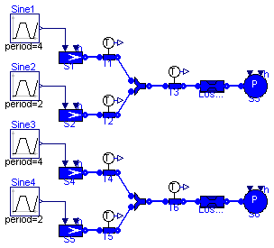
This model tests the FlowJoin models in all the possible flow configurations, both allowed and not allowed flow reversal.
Simulate the model for 7 s and observe the temperatures measured by the different sensors as the flows change.
model TestJoinRev "Test case FlowJoin"
package Medium=Modelica.Media.Water.WaterIF97OnePhase_ph;
constant Real pi=Modelica.Constants.pi;
ThermoPower.Water.SourceW S1(h=1e5, w0=2);
ThermoPower.Water.SourceW S2(h=2e5);
ThermoPower.Water.FlowJoin FlowJoin1;
ThermoPower.Water.SinkP S3(h=3e5);
ThermoPower.Water.PressDropLin LossP1(R=1e-5);
ThermoPower.Water.SensT T1(redeclare package Medium =
Medium);
ThermoPower.Water.SensT T2(redeclare package Medium =
Medium);
ThermoPower.Water.SensT T3(redeclare package Medium =
Medium);
Modelica.Blocks.Sources.Trapezoid Sine1(
nperiod=2,
rising=0.5,
width=0.5,
falling=0.5,
period=4,
offset=1,
startTime=0.5,
amplitude=-1.2);
Modelica.Blocks.Sources.Trapezoid Sine2(
nperiod=2,
rising=0.5,
width=0.5,
falling=0.5,
offset=1,
startTime=2.5,
period=2,
amplitude=-1.2);
ThermoPower.Water.SourceW S4(h=1e5, w0=2);
ThermoPower.Water.SourceW S5(h=2e5);
ThermoPower.Water.FlowJoin FlowJoin2(
rev_in1=false,
rev_in2=false,
rev_out=false);
ThermoPower.Water.SinkP S6(h=3e5);
ThermoPower.Water.PressDropLin LossP2(R=1e-5);
ThermoPower.Water.SensT T4(redeclare package Medium =
Medium);
ThermoPower.Water.SensT T5(redeclare package Medium =
Medium);
ThermoPower.Water.SensT T6(redeclare package Medium =
Medium);
Modelica.Blocks.Sources.Trapezoid Sine3(
nperiod=2,
rising=0.5,
width=0.5,
falling=0.5,
period=4,
offset=1,
startTime=0.5,
amplitude=-1.2);
Modelica.Blocks.Sources.Trapezoid Sine4(
nperiod=2,
rising=0.5,
width=0.5,
falling=0.5,
offset=1,
startTime=2.5,
period=2,
amplitude=-1.2);
equation
connect(LossP1.outlet, S3.flange);
connect(S1.flange, T1.inlet);
connect(S2.flange, T2.inlet);
connect(FlowJoin1.out, T3.inlet);
connect(T3.outlet, LossP1.inlet);
connect(T2.outlet, FlowJoin1.in2);
connect(FlowJoin1.in1, T1.outlet);
connect(Sine2.y, S2.in_w0);
connect(Sine1.y, S1.in_w0);
connect(LossP2.outlet,S6. flange);
connect(S4.flange,T4. inlet);
connect(S5.flange,T5. inlet);
connect(FlowJoin2.out,T6. inlet);
connect(T6.outlet,LossP2. inlet);
connect(T5.outlet, FlowJoin2.in2);
connect(FlowJoin2.in1, T4.outlet);
connect(Sine4.y, S5.in_w0);
connect(Sine3.y, S4.in_w0);
end TestJoinRev;
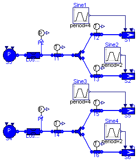
This model tests the FlowSplit models in all the possible flow configurations, both allowed and not allowed flow reversal.
Simulate the model for 7 s and observe the temperatures measured by the different sensors as the flows change.
model TestSplitRev "Test case FlowSplit"
package Medium=Modelica.Media.Water.WaterIF97OnePhase_ph;
constant Real pi=Modelica.Constants.pi;
ThermoPower.Water.SinkW S5(h=2e5);
ThermoPower.Water.SinkW S6(h=3e5);
ThermoPower.Water.FlowSplit FlowSplit2(
rev_in1=false,
rev_out1=false,
rev_out2=false);
ThermoPower.Water.PressDropLin LossP2(R=1e-5);
ThermoPower.Water.SourceP S4(h=1e5);
ThermoPower.Water.SensT T4(redeclare package Medium =
Medium);
ThermoPower.Water.SensT T5(redeclare package Medium =
Medium);
ThermoPower.Water.SensT T6(redeclare package Medium =
Medium);
ThermoPower.Water.SensP P1;
Modelica.Blocks.Sources.Trapezoid Sine3(
nperiod=2,
rising=0.5,
width=0.5,
falling=0.5,
period=4,
offset=1,
startTime=0.5,
amplitude=-1.2);
Modelica.Blocks.Sources.Trapezoid Sine4(
nperiod=2,
rising=0.5,
width=0.5,
falling=0.5,
offset=1,
startTime=2.5,
period=2,
amplitude=-1.2);
ThermoPower.Water.SinkW S1(h=2e5);
ThermoPower.Water.SinkW S2(h=3e5);
ThermoPower.Water.FlowSplit FlowSplit1;
ThermoPower.Water.PressDropLin LossP1(R=1e-5);
ThermoPower.Water.SourceP S3(h=1e5);
ThermoPower.Water.SensT T1(redeclare package Medium =
Medium);
ThermoPower.Water.SensT T2(redeclare package Medium =
Medium);
ThermoPower.Water.SensT T3(redeclare package Medium =
Medium);
ThermoPower.Water.SensP P2;
Modelica.Blocks.Sources.Trapezoid Sine1(
nperiod=2,
rising=0.5,
width=0.5,
falling=0.5,
period=4,
offset=1,
startTime=0.5,
amplitude=-1.2);
Modelica.Blocks.Sources.Trapezoid Sine2(
nperiod=2,
rising=0.5,
width=0.5,
falling=0.5,
offset=1,
startTime=2.5,
period=2,
amplitude=-1.2);
equation
connect(S4.flange, LossP2.inlet);
connect(LossP2.outlet, T4.inlet);
connect(T4.outlet,FlowSplit2. in1);
connect(T5.outlet, S5.flange);
connect(T6.outlet, S6.flange);
connect(P1.flange, LossP2.outlet);
connect(T5.inlet, FlowSplit2.out1);
connect(T6.inlet, FlowSplit2.out2);
connect(Sine4.y, S6.in_w0);
connect(Sine3.y, S5.in_w0);
connect(S3.flange,LossP1. inlet);
connect(LossP1.outlet,T1. inlet);
connect(T1.outlet,FlowSplit1. in1);
connect(T2.outlet,S1. flange);
connect(T3.outlet,S2. flange);
connect(P2.flange,LossP1. outlet);
connect(T2.inlet, FlowSplit1.out1);
connect(T3.inlet, FlowSplit1.out2);
connect(Sine2.y, S2.in_w0);
connect(Sine1.y, S1.in_w0);
end TestSplitRev;
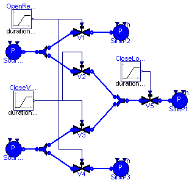
This model tests the ValveLiq model zero or reverse flow conditions.
Simulate the model for 4 s. At t = 1 s the V5 valve closes in 1 s, the V2 and V3 valves close in 2 s and the V1 and V4 valves open in 2 s. The flow in valve V3 reverses between t = 1.83 and t = 1.93.
model TestValves "Test cases for valves"
ThermoPower.Water.SourceP SourceP1(p0=10e5);
ThermoPower.Water.SourceP SourceP2(p0=8e5);
ThermoPower.Water.SinkP SinkP1(p0=1e5);
ThermoPower.Water.ValveLiq V1(
dpnom=9e5,
wnom=1.5,
redeclare package Medium = Modelica.Media.Water.StandardWater,
pnom=10e5,
Kv=2,
CvData=ThermoPower.Choices.Valve.CvTypes.Kv);
ThermoPower.Water.ValveLiq V2(
dpnom=5e5,
wnom=1.2,
pnom=10e5,
redeclare package Medium = Modelica.Media.Water.StandardWater,
Av=5e-5,
CvData=ThermoPower.Choices.Valve.CvTypes.Av);
ThermoPower.Water.ValveLiq V3(
dpnom=3e5,
wnom=1.1,
pnom=10e5,
redeclare package Medium = Modelica.Media.Water.StandardWater,
Av=5e-5,
CvData=ThermoPower.Choices.Valve.CvTypes.Av);
ThermoPower.Water.ValveLiq V4(
dpnom=8e5,
wnom=1.3,
pnom=10e5,
redeclare package Medium = Modelica.Media.Water.StandardWater,
Cv=2,
CvData=ThermoPower.Choices.Valve.CvTypes.Cv);
ThermoPower.Water.ValveLiq V5(
dpnom=4e5,
wnom=2,
pnom=5e5,
redeclare package Medium = Modelica.Media.Water.StandardWater,
Av=1e-4,
CvData=ThermoPower.Choices.Valve.CvTypes.Av);
ThermoPower.Water.FlowSplit FlowSplit1;
ThermoPower.Water.SinkP SinkP2(p0=1e5);
ThermoPower.Water.FlowJoin FlowJoin1;
ThermoPower.Water.FlowSplit FlowSplit2;
ThermoPower.Water.SinkP SinkP3(p0=1e5);
Modelica.Blocks.Sources.Ramp CloseLoad(
duration=1,
height=-0.99,
offset=1,
startTime=1);
Modelica.Blocks.Sources.Ramp OpenRelief(
duration=2,
height=1,
offset=0,
startTime=1);
Modelica.Blocks.Sources.Ramp CloseValves(
duration=2,
height=-1,
offset=1,
startTime=1);
equation
connect(SourceP1.flange, FlowSplit1.in1);
connect(FlowSplit1.out1, V1.inlet);
connect(V1.outlet, SinkP2.flange);
connect(V2.outlet, FlowJoin1.in1);
connect(V3.outlet, FlowJoin1.in2);
connect(FlowJoin1.out, V5.inlet);
connect(V5.outlet, SinkP1.flange);
connect(SourceP2.flange, FlowSplit2.in1);
connect(FlowSplit2.out2, V4.inlet);
connect(FlowSplit2.out1, V3.inlet);
connect(V4.outlet, SinkP3.flange);
connect(V2.inlet, FlowSplit1.out2);
connect(CloseValves.y, V3.theta);
connect(CloseValves.y, V2.theta);
connect(OpenRelief.y, V1.theta);
connect(V4.theta, OpenRelief.y);
connect(CloseLoad.y, V5.theta);
end TestValves;
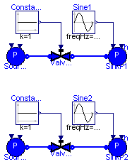
This model tests the transition from normal to choked flow for the ValveLiq and ValveVap models.
Simulate the model for 4 s and observe the flowrate through the two valves.
model TestValveChoked "Test case for valves in choked flow"
ThermoPower.Water.SourceP SourceP1(p0=5e5, h=400e3);
ThermoPower.Water.SinkP SinkP1;
Modelica.Blocks.Sources.Constant Constant1;
ThermoPower.Water.ValveLiqChoked ValveLiqChocked(
dpnom=2e5,
wnom=1,
redeclare package Medium = Modelica.Media.Water.StandardWater,
Av=5e-5,
CheckValve=false,
pnom=5e5,
CvData=ThermoPower.Choices.Valve.CvTypes.Av);
Modelica.Blocks.Sources.Sine Sine1(
amplitude=2.5e5,
freqHz=0.5,
offset=3e5,
phase=3.14159,
startTime=1);
ThermoPower.Water.SourceP SourceP2(p0=60e5, h=2.9e6);
ThermoPower.Water.SinkP SinkP2(p0=1e5);
ThermoPower.Water.ValveVap ValveVap(
dpnom=30e5,
pnom=60e5,
wnom=1,
redeclare package Medium = Modelica.Media.Water.StandardWater,
Av=1e-4,
CheckValve=false,
CvData=ThermoPower.Choices.Valve.CvTypes.Av);
Modelica.Blocks.Sources.Constant Constant2;
Modelica.Blocks.Sources.Sine Sine2(
amplitude=49.5e5,
freqHz=0.5,
offset=50e5,
phase=3.14159,
startTime=1);
equation
connect(ValveLiqChocked.outlet, SinkP1.flange);
connect(SourceP1.flange, ValveLiqChocked.inlet);
connect(SourceP2.flange, ValveVap.inlet);
connect(ValveVap.outlet, SinkP2.flange);
connect(Constant1.y, ValveLiqChocked.theta);
connect(Sine1.y, SinkP1.in_p0);
connect(Constant2.y, ValveVap.theta);
connect(Sine2.y, SinkP2.in_p0);
end TestValveChoked;
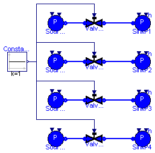
This model tests the ValveLiq models with four possible flow coefficients (also applies to other valves).
Simulate the model for 4 s and observe the flowrate through the valves.
model TestCoeffValve
"Test case for valve with the several coefficients"
ThermoPower.Water.SourceP SourceP1(p0=5e5, h=2e5);
ThermoPower.Water.SinkP SinkP1(p0=3e5);
Modelica.Blocks.Sources.Constant Constant1;
Water.ValveLiq ValveLiq1(
dpnom=2e5,
wnom=1,
redeclare package Medium = Modelica.Media.Water.StandardWater,
pnom=5e5,
CvData=ThermoPower.Choices.Valve.CvTypes.Av,
Av=7.2e-5);
ThermoPower.Water.SourceP SourceP2(p0=5e5, h=2e5);
ThermoPower.Water.SinkP SinkP2(p0=3e5);
Water.ValveLiq ValveLiq2(
dpnom=2e5,
wnom=1,
redeclare package Medium = Modelica.Media.Water.StandardWater,
pnom=5e5,
CvData=ThermoPower.Choices.Valve.CvTypes.Kv,
Kv=2.592);
ThermoPower.Water.SourceP SourceP3(p0=5e5, h=2e5);
ThermoPower.Water.SinkP SinkP3(p0=3e5);
Water.ValveLiq ValveLiq3(
dpnom=2e5,
wnom=1,
redeclare package Medium = Modelica.Media.Water.StandardWater,
pnom=5e5,
CvData=ThermoPower.Choices.Valve.CvTypes.Cv,
Cv=2.997);
ThermoPower.Water.SourceP SourceP4(p0=5e5, h=2e5);
ThermoPower.Water.SinkP SinkP4(p0=3e5);
Water.ValveLiq ValveLiq4(
dpnom=2e5,
redeclare package Medium = Modelica.Media.Water.StandardWater,
pnom=5e5,
CvData=ThermoPower.Choices.Valve.CvTypes.OpPoint,
wnom=1.012,
rhonom=989);
equation
connect(ValveLiq1.outlet, SinkP1.flange);
connect(SourceP1.flange, ValveLiq1.inlet);
connect(Constant1.y, ValveLiq1.theta);
connect(ValveLiq2.outlet, SinkP2.flange);
connect(SourceP2.flange, ValveLiq2.inlet);
connect(Constant1.y, ValveLiq2.theta);
connect(ValveLiq3.outlet, SinkP3.flange);
connect(SourceP3.flange, ValveLiq3.inlet);
connect(Constant1.y, ValveLiq3.theta);
connect(ValveLiq4.outlet, SinkP4.flange);
connect(SourceP4.flange, ValveLiq4.inlet);
connect(Constant1.y, ValveLiq4.theta);
end TestCoeffValve;
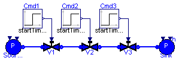
This model tests the ValveLiq model in zero flowrate conditions.
The flow coefficients are determined by initial equations, assuming a flow rate of 1 kg/s and equal sizing for the three valves.
Simulate the model for 1 s and observe the flowrates through the valves and the inlet and outlet pressure of V2.
model ValveZeroFlow "Test case for valves with zero flowrate"
ThermoPower.Water.SourceP Source(p0=5e5);
ThermoPower.Water.SinkP Sink(p0=1e5);
ThermoPower.Water.ValveLiq V1(
dpnom=2e5,
wnom=1,
redeclare package Medium = Modelica.Media.Water.StandardWater,
pnom=5e5,
Av=1e-4,
CvData=ThermoPower.Choices.Valve.CvTypes.OpPoint);
ThermoPower.Water.ValveLiq V2(
dpnom=1e5,
wnom=1,
redeclare package Medium = Modelica.Media.Water.StandardWater,
pnom=3e5,
Av=1e-4,
CvData=ThermoPower.Choices.Valve.CvTypes.OpPoint);
Modelica.Blocks.Sources.Step Cmd1(
height=0,
offset=1,
startTime=0);
Modelica.Blocks.Sources.Step Cmd2(
height=-.5,
offset=1,
startTime=0.3);
ThermoPower.Water.ValveLiq V3(
dpnom=1e5,
wnom=1,
redeclare package Medium = Modelica.Media.Water.StandardWater,
pnom=2e5,
Av=1e-4,
CvData=ThermoPower.Choices.Valve.CvTypes.OpPoint);
Modelica.Blocks.Sources.Step Cmd3(
height=-1,
offset=1,
startTime=0.6);
equation
connect(Source.flange, V1.inlet);
connect(V1.outlet, V2.inlet);
connect(V2.outlet, V3.inlet);
connect(Sink.flange, V3.outlet);
connect(Cmd1.y, V1.theta);
connect(Cmd2.y, V2.theta);
connect(Cmd3.y, V3.theta);
end ValveZeroFlow;
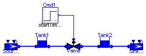
This model tests the ValveLiq model with small or zero flow and the Tank model.
Simulate for 20 s. After 10 s the flowrate goes to zero, as the two levels become equal.
model ValveZeroFlow2 "Test case for valves with zero flowrate"
Modelica.Blocks.Sources.Step Cmd1(
height=0,
offset=1,
startTime=0);
ThermoPower.Water.Tank Tank1(A=0.1,
redeclare package Medium = Modelica.Media.Water.StandardWater);
ThermoPower.Water.Tank Tank2(A=0.1,
redeclare package Medium = Modelica.Media.Water.StandardWater);
ThermoPower.Water.ValveLiq Valve(
dpnom=1e4,
wnom=10,
redeclare package Medium = Modelica.Media.Water.StandardWater,
Av=3.5e-3,
pnom=1e5,
CvData=ThermoPower.Choices.Valve.CvTypes.Av);
ThermoPower.Water.SourceW SourceW1(w0=0);
ThermoPower.Water.SinkW SinkW1(w0=0);
equation
connect(Tank1.outlet, Valve.inlet);
connect(Valve.outlet, Tank2.inlet);
connect(Tank2.outlet, SinkW1.flange);
connect(SourceW1.flange, Tank1.inlet);
initial equation
Tank1.y = 2;
Tank2.y = 1;
equation
connect(Cmd1.y, Valve.theta);
end ValveZeroFlow2;
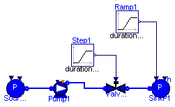
This model tests the Pump model with the check valve option active. Two pumps in parallel are simulated.
The valve is opened at time t=1s. The sink pressure is then increased so as to operate the pump in all the possible working conditions, including stopped flow.
Simulation Interval = [0...10] sec
Integration Algorithm = DASSL
Algorithm Tolerance = 1e-6
model WaterPump "Test case for WaterPump"
ThermoPower.Water.SourceP Source(p0=1e5, h=1.5e5);
ThermoPower.Water.ValveLin ValveLin1(Kv=1e-5);
ThermoPower.Water.SinkP SinkP1(p0=3e5);
/*
ThermoPower.Water.Pump Pump1(
rho0=1000,
pin_start=1e5,
pout_start=4e5,
hstart=1e5,
ThermalCapacity=true,
V=0.01,
P_cons={800,1800,2000},
head_nom={60,30,0},
q_nom={0,0.001,0.0015},
redeclare package Medium = Modelica.Media.Water.StandardWater,
redeclare package SatMedium = Modelica.Media.Water.StandardWater,
ComputeNPSHa=true,
CheckValve=true,
initOpt=ThermoPower.Choices.Init.Options.steadyState)
annotation (extent=[-54,26; -34,46]);
*/
Water.PumpNPSH Pump1(
rho0=1000,
pin_start=1e5,
pout_start=4e5,
hstart=1e5,
V=0.01,
redeclare package Medium = Modelica.Media.Water.StandardWater,
CheckValve=true,
initOpt=ThermoPower.Choices.Init.Options.noInit,
Np0=2,
usePowerCharacteristic=true,
n0=1500,
redeclare function flowCharacteristic =
ThermoPower.Functions.PumpCharacteristics.quadraticFlow (q_nom={0,
0.001,0.0015}, head_nom={60,30,0}),
redeclare function powerCharacteristic =
ThermoPower.Functions.PumpCharacteristics.quadraticPower (q_nom={0,
0.001,0.0015}, W_nom={350,500,600}));
Modelica.Blocks.Sources.Ramp Ramp1(
duration=4,
startTime=4,
height=6e5,
offset=1e5);
Modelica.Blocks.Sources.Ramp Step1(
height=1,
startTime=1,
offset=1e-6,
duration=1);
equation
connect(ValveLin1.outlet, SinkP1.flange);
connect(Source.flange, Pump1.infl);
connect(Pump1.outfl, ValveLin1.inlet);
connect(Ramp1.y, SinkP1.in_p0);
connect(Step1.y, ValveLin1.cmd);
end WaterPump;
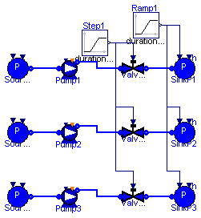
This model tests three Pump models with different flow caratteristcs and with the check valve option active. Two pumps in parallel are simulated.
The valve is opened at time t=1s. The sink pressure is then increased so as to operate the pump in all the possible working conditions, including stopped flow.
Simulation Interval = [0...10] sec
Integration Algorithm = DASSL
Algorithm Tolerance = 1e-6
model WaterPumps "Test case for WaterPump"
ThermoPower.Water.SourceP Source1(p0=1e5, h=1.5e5);
ThermoPower.Water.ValveLin ValveLin1(Kv=1e-5);
ThermoPower.Water.SinkP SinkP1(p0=3e5);
Water.PumpNPSH Pump1(
rho0=1000,
pin_start=1e5,
pout_start=4e5,
hstart=1e5,
V=0.01,
redeclare package Medium = Modelica.Media.Water.StandardWater,
CheckValve=true,
initOpt=ThermoPower.Choices.Init.Options.noInit,
Np0=2,
usePowerCharacteristic=true,
n0=1500,
redeclare function flowCharacteristic =
ThermoPower.Functions.PumpCharacteristics.linearFlow (q_nom={0.001,
0.0015}, head_nom={30,0}));
Modelica.Blocks.Sources.Ramp Ramp1(
duration=4,
startTime=4,
height=6e5,
offset=1e5);
Modelica.Blocks.Sources.Ramp Step1(
height=1,
startTime=1,
offset=1e-6,
duration=1);
ThermoPower.Water.SourceP Source2(
p0=1e5, h=1.5e5);
ThermoPower.Water.ValveLin ValveLin2(Kv=1e-5);
ThermoPower.Water.SinkP SinkP2(p0=3e5);
Water.PumpNPSH Pump2(
rho0=1000,
pin_start=1e5,
pout_start=4e5,
hstart=1e5,
V=0.01,
redeclare package Medium = Modelica.Media.Water.StandardWater,
CheckValve=true,
initOpt=ThermoPower.Choices.Init.Options.noInit,
Np0=2,
usePowerCharacteristic=true,
n0=1500,
redeclare function flowCharacteristic =
ThermoPower.Functions.PumpCharacteristics.quadraticFlow (q_nom={
0.0005,0.001,0.0015}, head_nom={50,30,0}));
ThermoPower.Water.SourceP Source3(
p0=1e5, h=1.5e5);
ThermoPower.Water.ValveLin ValveLin3(Kv=1e-5);
ThermoPower.Water.SinkP SinkP3(p0=3e5);
Water.PumpNPSH Pump3(
rho0=1000,
pin_start=1e5,
pout_start=4e5,
hstart=1e5,
V=0.01,
redeclare package Medium = Modelica.Media.Water.StandardWater,
CheckValve=true,
initOpt=ThermoPower.Choices.Init.Options.noInit,
Np0=2,
usePowerCharacteristic=true,
n0=1500,
redeclare function flowCharacteristic =
ThermoPower.Functions.PumpCharacteristics.polynomialFlow (q_nom={
0.0005,0.001,0.0015}, head_nom={50,30,0}));
equation
connect(ValveLin1.outlet, SinkP1.flange);
connect(Source1.flange, Pump1.infl);
connect(Pump1.outfl, ValveLin1.inlet);
connect(Ramp1.y, SinkP1.in_p0);
connect(Step1.y, ValveLin1.cmd);
connect(ValveLin2.outlet,SinkP2. flange);
connect(Source2.flange, Pump2.infl);
connect(Pump2.outfl,ValveLin2. inlet);
connect(ValveLin3.outlet,SinkP3. flange);
connect(Source3.flange, Pump3.infl);
connect(Pump3.outfl,ValveLin3. inlet);
connect(ValveLin2.cmd, Step1.y);
connect(SinkP2.in_p0, Ramp1.y);
connect(SinkP3.in_p0, Ramp1.y);
connect(ValveLin3.cmd, Step1.y);
end WaterPumps;
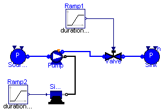
The model is designed to test the component PumpMech. The simple model of a DC motor Test.SimpleMotor is also used.
The simulation starts with a stopped motor and a closed valve.
Simulation Interval = [0...25] sec
Integration Algorithm = DASSL
Algorithm Tolerance = 1e-6
model WaterPumpMech "Test case for WaterPumpMech"
package Medium=Modelica.Media.Water.WaterIF97_ph;
ThermoPower.Water.PumpMech Pump(
rho0=1000,
n0=100,
pin_start=1e5,
pout_start=4e5,
V=0.001,
redeclare package Medium = Modelica.Media.Water.StandardWater,
initOpt=ThermoPower.Choices.Init.Options.noInit,
redeclare function flowCharacteristic =
ThermoPower.Functions.PumpCharacteristics.quadraticFlow (q_nom={0,0.001,
0.0015}, head_nom={60,30,0}),
usePowerCharacteristic=true,
redeclare function powerCharacteristic =
ThermoPower.Functions.PumpCharacteristics.quadraticPower (q_nom={0,
0.001,0.0015}, W_nom={350,500,600}));
ThermoPower.Water.SourceP Source;
ThermoPower.Water.ValveLin Valve(Kv=1e-5);
Modelica.Blocks.Sources.Ramp Ramp1(
duration=5,
height=1,
offset=0,
startTime=15);
ThermoPower.Water.SinkP Sink(p0=0.8e5);
Modelica.Blocks.Sources.Ramp Ramp2(
duration=5,
height=380,
startTime=2,
offset=0.01);
SimpleMotor SimpleMotor1(
Rm=20,
Lm=0.1,
kT=35,
Jm=10,
dm=1);
equation
connect(Source.flange, Pump.infl);
connect(Pump.outfl, Valve.inlet);
connect(Valve.outlet, Sink.flange);
connect(SimpleMotor1.flange_b, Pump.MechPort);
connect(Ramp1.y, Valve.cmd);
connect(Ramp2.y, SimpleMotor1.inPort);
end WaterPumpMech;
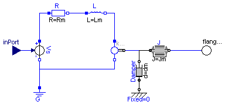
This is a basic model of an electrical DC motor used to drive a pump in WaterPumpMech.
| Type | Name | Default | Description |
|---|---|---|---|
| Resistance | Rm | 10 | Motor Resistance [Ohm] |
| Inductance | Lm | 1 | Motor Inductance [H] |
| Real | kT | 1 | Torque Constant |
| Inertia | Jm | 10 | Motor Inertia [kg.m2] |
| Real | dm | 0 | Damping constant [N.m.s/rad] |
| Type | Name | Description |
|---|---|---|
| input RealInput | inPort | |
| Flange_b | flange_b |
model SimpleMotor
"A simple model of an electrical dc motor (based on DriveLib model)."
parameter Modelica.SIunits.Resistance Rm=10 "Motor Resistance";
parameter Modelica.SIunits.Inductance Lm=1 "Motor Inductance";
parameter Real kT=1 "Torque Constant";
parameter Modelica.SIunits.Inertia Jm=10 "Motor Inertia";
parameter Real dm(
final unit="N.m.s/rad",
final min=0) = 0 "Damping constant";
Modelica.SIunits.Conversions.NonSIunits.AngularVelocity_rpm n;
Modelica.Electrical.Analog.Sources.SignalVoltage Vs;
Modelica.Electrical.Analog.Basic.Ground G;
Modelica.Electrical.Analog.Basic.Resistor R(R=Rm);
Modelica.Electrical.Analog.Basic.Inductor L(L=Lm);
Modelica.Electrical.Analog.Basic.EMF emf(k=kT);
Modelica.Blocks.Interfaces.RealInput inPort;
Modelica.Mechanics.Rotational.Inertia J(J=Jm);
Modelica.Mechanics.Rotational.Interfaces.Flange_b flange_b;
Modelica.Mechanics.Rotational.Fixed Fixed;
Modelica.Mechanics.Rotational.Damper Damper(d=dm);
equation
n = Modelica.SIunits.Conversions.to_rpm(J.w);
connect(R.n, L.p);
connect(L.n, emf.p);
connect(emf.flange_b, J.flange_a);
connect(R.p, Vs.p);
connect(Vs.n, emf.n);
connect(G.p, Vs.n);
connect(J.flange_b, flange_b);
connect(inPort,Vs.v);
connect(Fixed.flange_b, Damper.flange_a);
connect(Damper.flange_b, J.flange_a);
end SimpleMotor;
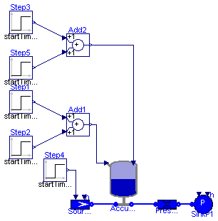
The model is designed to test the component Accumulator.
Simulation sequence:
Simulation Interval = [0...8000] sec
Integration Algorithm = DASSL
Algorithm Tolerance = 1e-6
model TestAccumulator
"Simple test for Water-Gas Accumulator component"
package Medium=Modelica.Media.Water.WaterIF97_ph;
ThermoPower.Water.Accumulator Accumulator1(
hl_start=1e5,
Tg_start=300,
Tgin=300,
Tg0=300,
pg0=5e5,
V=5,
Vl0=3,
zl0=2,
zl_start=0,
pg_start=7e5,
gamma_ex=100,
wg_out0=2e-2,
MM=29e-3,
A=1,
redeclare package Medium = Modelica.Media.Water.StandardWater,
initOpt=ThermoPower.Choices.Init.Options.steadyState);
ThermoPower.Water.SourceW SourceW1(w0=0);
ThermoPower.Water.SinkP SinkP1(p0=1e5);
ThermoPower.Water.PressDropLin PressDropLin1(R=1e5);
Modelica.Blocks.Sources.Step Step1(height=2e-2, startTime=500);
Modelica.Blocks.Math.Add Add1;
Modelica.Blocks.Sources.Step Step2(height=-2e-2, startTime=520);
Modelica.Blocks.Sources.Step Step3(height=1, startTime=2500);
Modelica.Blocks.Math.Add Add2;
Modelica.Blocks.Sources.Step Step5(height=-1, startTime=2520);
Modelica.Blocks.Sources.Step Step4(
height=0.5,
offset=5,
startTime=5000);
equation
connect(Accumulator1.WaterOutfl, PressDropLin1.inlet);
connect(PressDropLin1.outlet, SinkP1.flange);
connect(SourceW1.flange, Accumulator1.WaterInfl);
initial equation
/*
der(Accumulator1.rhog) = 0;
der(Accumulator1.Tg) = 0;
der(Accumulator1.hl) = 0;
Accumulator1.zl = 0;
*/
equation
connect(Add1.y, Accumulator1.GasInfl);
connect(Add2.y, Accumulator1.OutletValveOpening);
connect(Step4.y, SourceW1.in_w0);
connect(Step5.y, Add2.u2);
connect(Step3.y, Add2.u1);
connect(Step1.y, Add1.u1);
connect(Step2.y, Add1.u2);
end TestAccumulator;
This model is designed to test the SteamTurbineUnit component when connected to an inertial load. Simulation sequence:
Simulation Interval = [0...5] sec
Integration Algorithm = DASSL
Algorithm Tolerance = 1e-4
| Type | Name | Default | Description |
|---|---|---|---|
| MassFlowRate | w | 1 | [kg/s] |
| Pressure | pin | 60e5 | [Pa] |
| Pressure | pcond | 0.08e5 | [Pa] |
| PerUnit | eta_iso | 0.92 | [pu] |
| PerUnit | eta_mech | 0.98 | [pu] |
| AngularVelocity | omega | 314 | [rad/s] |
| SpecificEnthalpy | hin | 2.949e6 | [J/kg] |
| SpecificEnthalpy | hout_iso | 2.240e6 | [J/kg] |
| SpecificEnthalpy | hout | hin - eta_iso*(hin - hout_iso) | [J/kg] |
| Power | Pnet | eta_iso*eta_mech*w*(hin - ho... | [W] |
| Torque | tau | 0.8*Pnet/omega | [N.m] |
| Time | Ta | 10 | Turbine acceleration time [s] |
| MomentOfInertia | J | Pnet*Ta/omega^2 | [kg.m2] |
| HydraulicResistance | Kv | 1/2e5 | [Pa/(kg/s)] |
| PerUnit | theta0 | 1 | [pu] |
model TestST1
package Medium=Modelica.Media.Water.StandardWater;
parameter MassFlowRate w=1;
parameter Pressure pin=60e5;
parameter Pressure pcond=0.08e5;
parameter PerUnit eta_iso=0.92;
parameter PerUnit eta_mech=0.98;
parameter AngularVelocity omega=314;
parameter SpecificEnthalpy hin=2.949e6;
parameter SpecificEnthalpy hout_iso=2.240e6;
parameter SpecificEnthalpy hout=hin-eta_iso*(hin-hout_iso);
parameter Power Pnet=eta_iso*eta_mech*w*(hin-hout_iso);
parameter Torque tau=0.8*Pnet/omega;
parameter Time Ta=10 "Turbine acceleration time";
parameter MomentOfInertia J=Pnet*Ta/omega^2;
parameter HydraulicResistance Kv=1/2e5;
parameter PerUnit theta0(fixed=false)=1;
Water.SteamTurbineUnit ST(
hpFraction=0.63,
T_HP=0.2,
T_LP=3.4,
hstartin=2.9e6,
hstartout=2.24e6,
pnom=pin,
wnom=w,
pstartin=pin,
eta_iso=eta_iso,
redeclare package Medium=Medium);
Water.SourceP SourceP1(p0=pin, h=hin);
Modelica.Mechanics.Rotational.Inertia Inertia1(J=J);
Water.SinkP SinkP1(p0=pcond);
Water.ValveLin ValveLin1(Kv=Kv);
Modelica.Blocks.Sources.Step Step1(
height=-0.01,
offset=theta0,
startTime=1);
Modelica.Mechanics.Rotational.Torque Load;
Modelica.Blocks.Sources.Constant TorqueLoad(k=-tau);
Water.SensT SensT1(redeclare package Medium=Medium);
equation
connect(ST.shaft_b, Inertia1.flange_a);
connect(ST.outlet, SinkP1.flange);
connect(SourceP1.flange, ValveLin1.inlet);
connect(Inertia1.flange_b, Load.flange_b);
initial equation
ST.phi=0;
ST.omega=omega;
der(ST.omega)=0;
der(ST.P_HP)=0;
der(ST.P_LP)=0;
equation
connect(ValveLin1.outlet, SensT1.inlet);
connect(SensT1.outlet, ST.inlet);
connect(Step1.y, ValveLin1.cmd);
connect(TorqueLoad.y, Load.tau);
end TestST1;
This model is designed to test the SteamTurbineUnit component when connected to a fixed speed load. Simulation sequence:
Simulation Interval = [0...10] sec
Integration Algorithm = DASSL
Algorithm Tolerance = 1e-4
| Type | Name | Default | Description |
|---|---|---|---|
| MassFlowRate | w | 1 | [kg/s] |
| Pressure | pin | 60e5 | [Pa] |
| Pressure | pcond | 0.08e5 | [Pa] |
| PerUnit | eta_iso | 0.92 | [pu] |
| PerUnit | eta_mech | 0.98 | [pu] |
| AngularVelocity | omega | 314 | [rad/s] |
| SpecificEnthalpy | hin | 2.949e6 | [J/kg] |
| SpecificEnthalpy | hout_iso | 2.240e6 | [J/kg] |
| SpecificEnthalpy | hout | hin - eta_iso*(hin - hout_iso) | [J/kg] |
| Power | Pnet | eta_iso*eta_mech*w*(hin - ho... | [W] |
| Torque | tau | 0.8*Pnet/omega | [N.m] |
| Time | Ta | 10 | Turbine acceleration time [s] |
| MomentOfInertia | J | Pnet*Ta/omega^2 | [kg.m2] |
| HydraulicResistance | Kv | 1/2e5 | [Pa/(kg/s)] |
| PerUnit | theta0 | 0.3 | [pu] |
model TestST2
package Medium=Modelica.Media.Water.StandardWater;
parameter MassFlowRate w=1;
parameter Pressure pin=60e5;
parameter Pressure pcond=0.08e5;
parameter PerUnit eta_iso=0.92;
parameter PerUnit eta_mech=0.98;
parameter AngularVelocity omega=314;
parameter SpecificEnthalpy hin=2.949e6;
parameter SpecificEnthalpy hout_iso=2.240e6;
parameter SpecificEnthalpy hout=hin-eta_iso*(hin-hout_iso);
parameter Power Pnet=eta_iso*eta_mech*w*(hin-hout_iso);
parameter Torque tau=0.8*Pnet/omega;
parameter Time Ta=10 "Turbine acceleration time";
parameter MomentOfInertia J=Pnet*Ta/omega^2;
parameter HydraulicResistance Kv=1/2e5;
parameter PerUnit theta0=0.3;
Water.SteamTurbineUnit ST(
hpFraction=0.63,
T_HP=0.2,
T_LP=3.4,
hstartin=2.9e6,
hstartout=2.8e6,
pnom=pin,
wnom=w,
pstartin=pin,
eta_iso=eta_iso,
redeclare package Medium=Medium);
Water.SourceP SourceP1( p0=pin, h=hin);
Modelica.Mechanics.Rotational.Inertia Inertia1(J=J);
Water.SinkP SinkP1(p0=pcond);
Water.ValveLin ValveLin1(Kv=Kv);
Modelica.Blocks.Sources.Step Step1(
height=-0.1,
offset=theta0,
startTime=1);
Modelica.Mechanics.Rotational.Speed Speed1(exact=true);
Modelica.Blocks.Sources.Constant Constant1(k=omega);
equation
connect(ST.shaft_b, Inertia1.flange_a);
connect(ST.outlet, SinkP1.flange);
connect(ValveLin1.outlet, ST.inlet);
connect(SourceP1.flange, ValveLin1.inlet);
initial equation
ST.phi=0;
der(ST.P_HP)=0;
der(ST.P_LP)=0;
equation
connect(Speed1.flange_b, Inertia1.flange_b);
connect(Step1.y, ValveLin1.cmd);
connect(Constant1.y, Speed1.w_ref);
end TestST2;